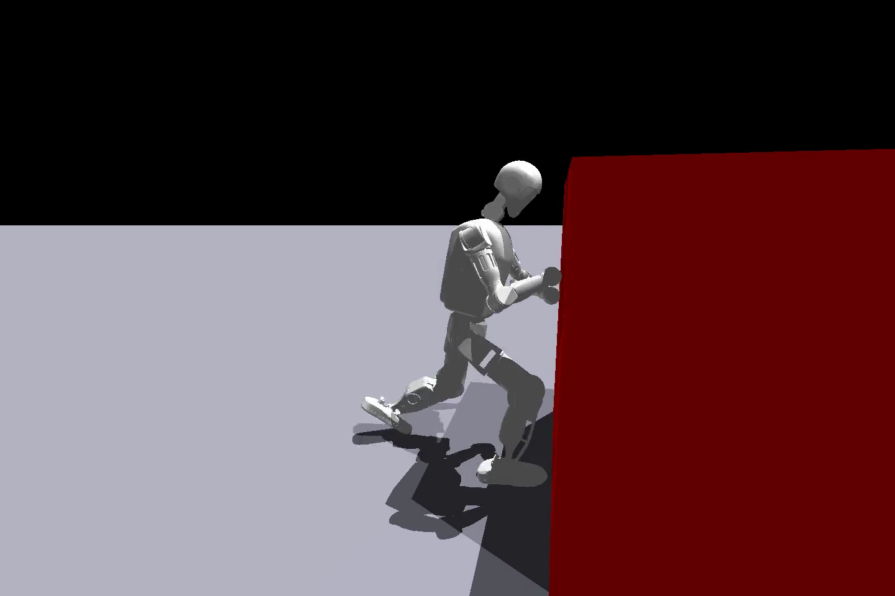
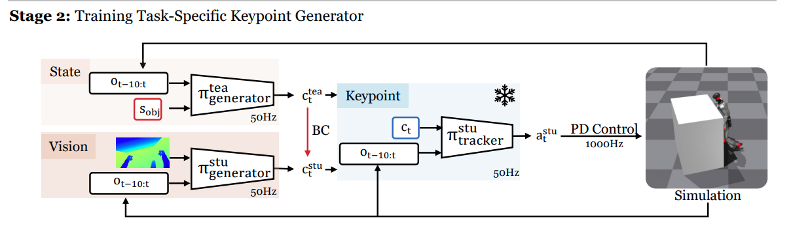

Method at a glance
- Retarget motionTranslate human motion into robot-compatible trajectories with GMR and filter against joint limits.
- Learn whole-body controlTrain a privileged motion-tracking teacher and distill a reusable low-level student.
- Learn interactionGenerate keypoint commands from object state or visual features, then execute them through the frozen tracker.
Schematic summary of the project workflow.
Task and motivation
The project investigates how a humanoid can combine stable locomotion with interaction rather than learning each movement as an isolated skill. Its two-level design separates a general motion tracker from an object-specific policy. This makes it possible to reuse learned whole-body control while changing the task-level commands.
The implementation targets Booster T1, with Unitree G1 used for comparison. The documented interaction experiments focus on approaching and pushing a box while maintaining balance, contact, and controlled object movement.
Motion data and robot adaptation
The team retargeted more than 15,000 human motions from 17 source collections, including AMASS, OMOMO, and KIT, using General Motion Retargeting. Development proceeded from small standing/walking subsets to larger motion pools. The final presentation reports 1,500 walking files for T1 and a 15,000-motion pool for the G1 comparison.
Robot-specific preprocessing downweights trajectories that exceed joint limits or spend too much time near them. Another important correction puts robot and reference tracking errors into a shared robot-root yaw frame before subtraction, avoiding inconsistent mixtures of coordinate systems.
Hierarchical teacher–student architecture
The low-level controller adapts ideas from TWIST and VisualMimic. A privileged teacher learns tracking with PPO; a student combines reinforcement learning with teacher-action imitation through DAgger. At the task level, a teacher can observe the object's position and velocity, whereas a visual student uses pretrained DINOv2 ViT-S/14 features and proprioceptive history.
The high-level policy produces root/keypoint commands for a frozen low-level tracker, which maps them to motor actions. The T1 implementation uses eleven keypoints and a 36-dimensional high-level command. The visual encoder is frozen, and the implementation supports RGB and depth features. Reward terms cover reaching toward the object, contact force, forward progress, object tilt and drift, upright posture, foot lifting, and alternating gait.
Experiments and scope
The end-term material demonstrates simulated T1 box interaction, compares the same reward setup on G1, and shows early visual-student training. It documents progress on the integrated camera/object environment, keypoint action space, frozen tracker, and contact rewards.
The February 2026 end-term results cover simulation. High-level teacher and visual-student optimization were still in progress, with complete real-robot interaction scheduled as a subsequent stage.
Project visuals





Related resources
- TWIST: Teleoperated Whole-Body Imitation SystemMotion-tracking foundation
- VisualMimic: Visual Humanoid Loco-ManipulationHierarchical visual-control foundation
- General Motion RetargetingHuman-to-robot motion retargeting
Based on the team's mid-term and end-term presentations and the Booster T1 implementation. Images show the team's simulation experiments; contributions are described at team level.